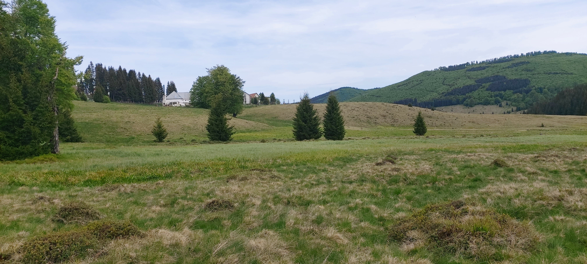

The Vlășchinescu Swamps
In the heart of the Gutâi Igniș Mountains, in the enchanting natural setting of Maramureș County, specific to the village of Mara in the Desești commune, we discover the Vlășchinescu or Vlășinescu Swamps, an ecological jewel covering 2.92 hectares. This fascinating ecosystem, enriched by remarkable biological diversity, rivals other renowned tourist attractions in the region.
Due to local anthropogenic pressures and climate changes, the Vlășchinescu Swamp faces a precarious situation in terms of conservation. To protect this area, the site has been designated a Protected Natural Area since 2000, recognized as a Natural Monument in Category III by the IUCN.

The distinctive domed appearance of the Vlășchinescu Swamps
Biodiversity
The swamp harbors diverse moss species from the genus Sphagnum, the main contributor to peat bog formation, and a distinctive flora that creates a colorful carpet during the warm season, captivating both from a scientific and landscape perspective.
Among the plant species present are:
- Round-leaved Sundew (Drosera rotundifolia, D. obovata, D. anglica)
- Marsh violets (Viola epipsila)
- Swertia (Swertia perennis)
- Hare's-tail Cottongrass (Eriophorum vaginatum)
- Dwarf Willow (Salix starkeana)
- Cranberries (Vaccinium oxicoccos)
- Bog Rosemary (Andromeda polifolia)
- Crowberry (Empetrum nigrum)
- Marsh Arrowgrass (Triglochin palustre)
- Chickweed Wintergreen (Trientalis europaea)
- Tufted Loosestrife (Lysimachia thyrsiflora)

Drosera rotundifolia – a protected species, characteristic of bogs, famous for being carnivorous

Vaccinium oxycoccos (Cranberries)

Carex pauciflora

Empetrum nigrum (Crowberry)

Invertebrate Fauna of the Swamp

Gryllidae Family – Cricket in the Swamp

Arachnids and Their Webs in the Swamp
Recommendations
We recommend that tourists enjoy their visit to Maramureș, but with care for nature and greater protection for these ecosystems, as species characteristic of swamps are highly sensitive to anthropogenic pressures.
Therefore, preserve memories through photographs rather than collecting plants or animals. Some of them are protected due to their declining populations. To ensure that other visitors can also appreciate the wonderful landscapes, we advise against littering or destroying vegetation.
A crucial rule for peat bogs: do not make fires in these habitats, as peat smolders and the fire can travel underground for tens of meters, erupting at a distance.